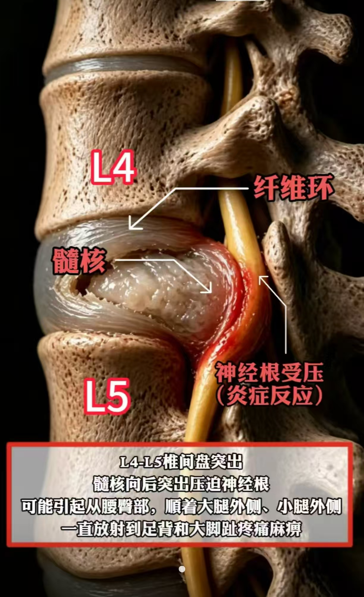
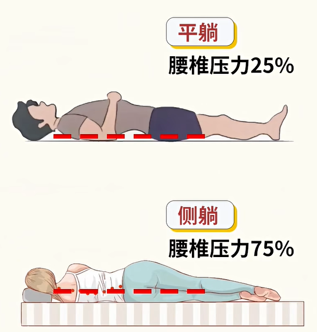
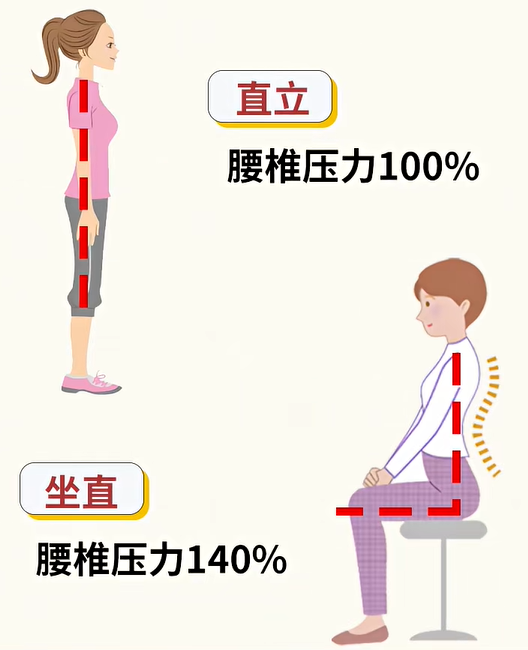
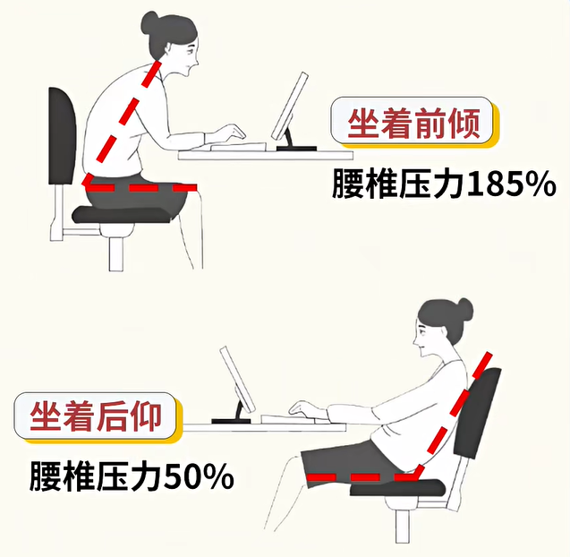
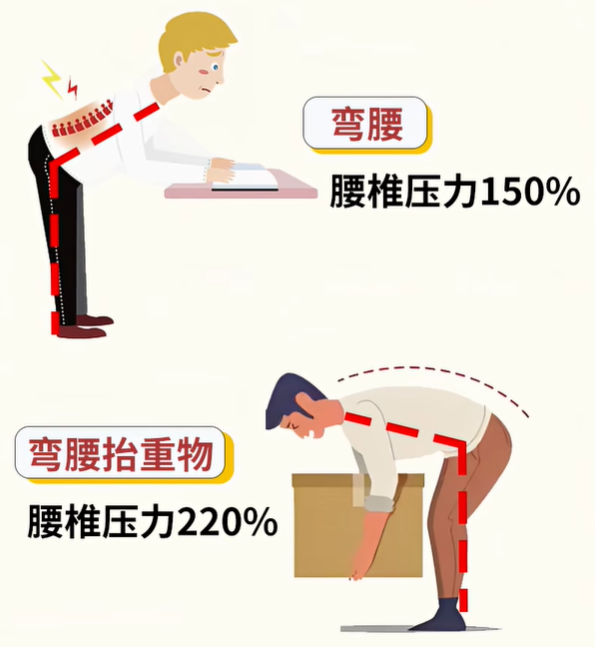

←
腰突术后专区
🦴
腰突术后专区
科学康复，重新挺直
🧠
症状原理
🦴
腰突为什么会屁股疼、腿疼、脚麻？

腰椎间盘突出压迫神经根，引发坐骨神经痛及下肢症状
腰椎间盘突出后，髓核向后突出压迫神经根，引起神经根水肿和炎症反应，从而出现沿神经走行部位的放射性疼痛、麻木或感觉异常。
🏥
治疗方式
🏥
腰椎间盘突出症 治疗方式
小针刀、穿刺治疗
适用情况：
腰椎间盘突出，无脚麻、神经未受压迫，以局部肌肉劳损、筋膜粘连、软组织疼痛为主。
射频消融微创
原理：
通过射频针产生高温，精准蒸发椎间盘内部多余水分，让突出的髓核回缩缩小，减轻椎间盘对周围组织的刺激。
适用情况：
椎间盘膨出、轻微突出，神经根受压较轻，无明显下肢麻木无力，保守治疗效果不佳者。
椎间孔镜微创
适用情况：
椎间盘突出已压迫神经，伴随下肢麻木、疼痛、放射性痛，保守治疗无效，需精准解除神经压迫。
开放式传统手术
适用情况：
椎间盘游离脱出、腰椎滑脱、椎管狭窄，或多节段严重突出、孔镜无法处理的复杂情况，需开放减压固定。
💡 治疗方式的选择需根据病情严重程度、神经受压情况及医生建议综合决定，请勿自行判断。
📋
术后注意事项
📋
椎间孔镜术后注意事项
一、如何联系到我
方式一：微信关注
北医三院服务号
，选择"导诊"→在线挂号，外科→疼痛门诊→易端
方式二：微信扫码关注"好大夫"平台，可以直接网上联系到医生本人
如果挂不上号，可以来门诊加号
固定出诊时间：本部
周一下午、周二上午、周四下午
二、腰围佩戴时间
躺在床上
不需要
佩戴腰围
手术后下床行走及坐立
必须先佩戴
腰围
腰围佩戴
两周
：之后短距离行走/短时间坐可不戴
行走或坐超过
半小时
，建议继续佩戴腰围两周
手术后
一个月
基本完全不用佩戴腰围
三、运动恢复时间
术后
6 小时或 24 小时
可第一次短时间下地行走（遵医院安排）
1 个月内
尽量卧床休息为主，床上多做
直腿抬高
及
勾脚运动
，防止神经粘连
1 个月后
可恢复正常生活和工作，但
切忌剧烈运动
（跑步、打球等）
腰椎不要用力，
不要直接弯腰搬重物
3 个月后
复查，由医生判断是否可恢复剧烈运动
⚠️ 三个月以内
都不推荐
做小燕飞、臀桥练习以及五点支撑等腰背部肌肉力量锻炼！
四、术后症状恢复情况
大部分术前症状术后会
立即消失
可能残留腰臀部疼痛、下肢轻微疼痛/麻木/发凉等
这些症状可能在术后第
2～7 天
才出现，属于
神经反跳痛
，是正常反应
一般到术后
3 个月
上述症状基本完全消失
如再次出现与手术前
一模一样
的症状，需咨询医师
五、复发问题
椎间孔镜术后复发概率约
5%
如有严重终板炎、肥胖、宽基底部突出等，复发概率增加
过早剧烈运动、康复锻炼或弯腰都会
增加复发概率
若出现与手术前一致的症状（疼痛范围、程度一致甚至加重），需怀疑复发，做核磁检查
六、术后复查
第一次复查
：术后 2 周，需拆线（伤口约 1cm）
第二次复查
：术后 3 个月，需复查腰椎核磁
💡 核磁报告可能显示还有椎间盘突出、椎管狭窄等——
不要担心
！手术只切除严重压迫神经的突出，其他未压迫神经的部位会保留。
重点看症状恢复情况，不要看核磁报告结果。
📊
姿势与腰椎压力
⚠️
不同姿势对腰椎的压力

平躺 25% / 侧躺 75%

直立 100% / 坐直 140%

前倾 185% / 后仰 50%

弯腰 150% / 抬重物 220%
💡 核心提醒
平躺压力最小（25%），弯腰抬重物压力最大（220%）。术后应
多平躺休息
，避免久坐、前倾和弯腰搬重物，保护腰椎从正确姿势开始！
🗓️
恢复日程
术后当天
平卧休息 · 观察下肢感觉 · 避免用力
第1-3天
可适当翻身 · 直腿抬高练习 · 预防神经根粘连
第3-7天
佩戴腰围下床活动 · 避免久坐 · 逐步行走
第2-4周
增加行走距离 · 直腿抬高练习 · 避免弯腰负重
第1-3个月
复查评估 · 逐步恢复日常活动 · 避免剧烈运动
💡
今日贴士
正确起卧
侧卧→用手撑起→坐起→站立，避免直接仰卧起坐
佩戴腰围
下床活动时必须佩戴，卧床时取下
避免久坐
坐位不超过30分钟，定时起身活动
直腿抬高
每日练习直腿抬高，预防神经根粘连
⏰
康复提醒
🏋️
腰背肌功能锻炼（三个月后）
小燕飞、臀桥练习、五点支撑
⚠️ 术后三个月内禁止做此类锻炼！三个月后经医生复查同意方可开始
⚠️ 温馨提醒
以上内容仅供康复参考，具体训练方案请遵医嘱。如出现下肢麻木加重、疼痛剧烈等异常情况，请及时就医。
🏥
知名就诊医院
🏥
北京丰盛骨科专科医院
保守治疗
📍 地址
北京市西城区阜内大街306号
🏥
北京大学第三医院
手术治疗
有多个院区
📍 地址
北京市海淀区花园北路49号
🏥
首都医科大学附属北京积水潭医院
手术治疗
📍 地址
北京市西城区新街口东街31号
🏠
首页
🩹
肛瘘
🦴
腰突
👤
我的